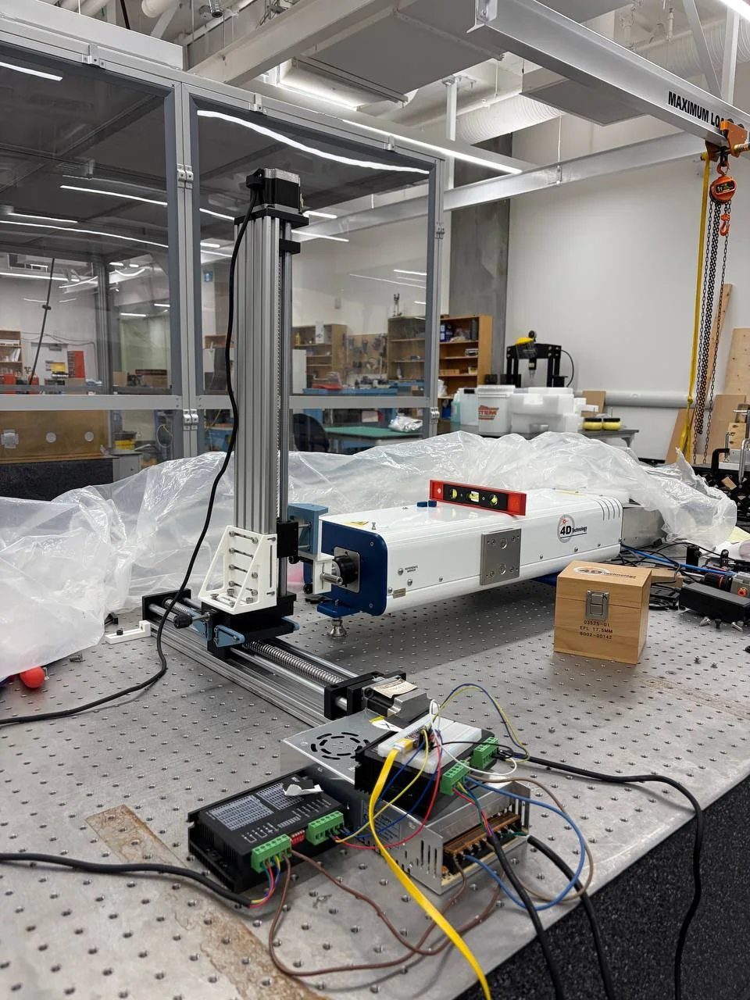
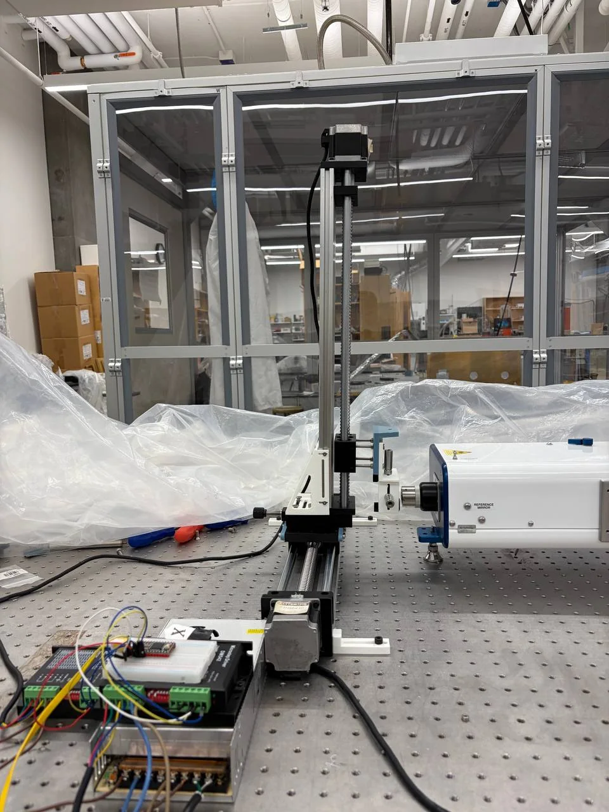
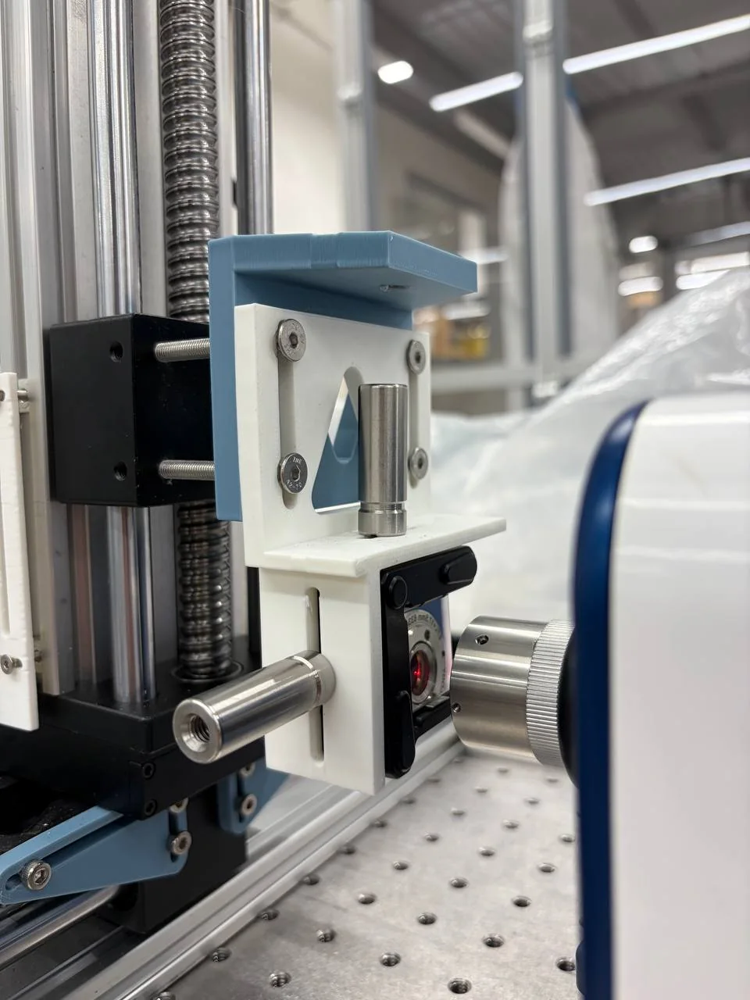
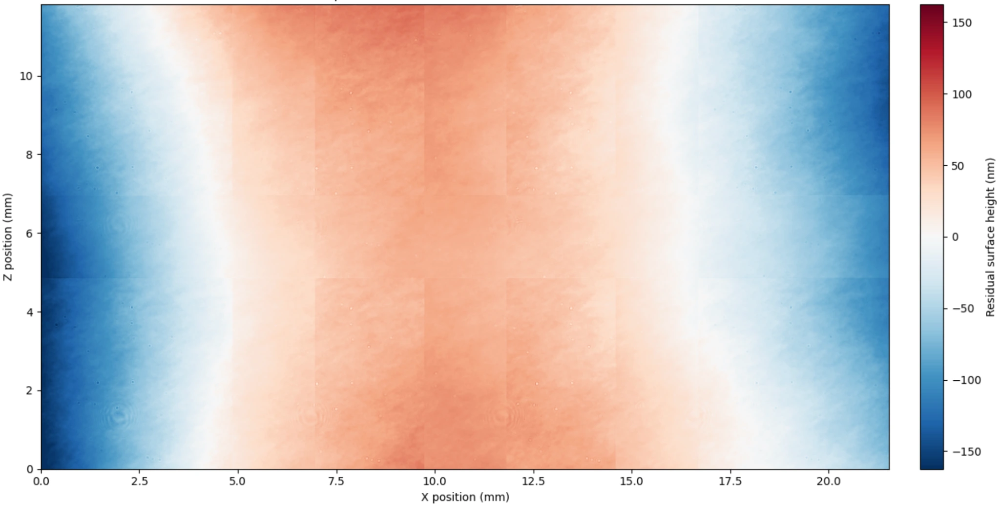

Optical metrology · Automation · Scientific computing
Interferometric
Surface Profiler
Automated multi-axis scanning and computational reconstruction of optical surfaces larger than a single interferometer field of view.

Overview
Extending a limited field of view
The PhaseCam can resolve local surface form with high spatial density, but its field of view is smaller than the mirror region of interest. I developed a translation platform and Python reconstruction workflow that acquires overlapping surface maps, solves their relative piston and tilt, and combines them into a larger continuous aperture map.
The system uses independent horizontal and vertical stages. The mirror moves while the interferometer remains fixed. For the latest flat-mirror validation, eight measurements were acquired as a 2 × 4 mosaic with nominal 30% overlap.
Engineering problem
One measurement cannot cover the complete optic.
Each acquisition captures only a local patch. The useful full-aperture result depends on repeatable motion, controlled overlap, robust registration, and blending that does not introduce artificial seams.
Experimental system
Hardware architecture
A fixed interferometer observes a mirror translated in X and Z by stepper-driven linear stages.



Acquisition strategy
Eight overlapping measurements
Four tiles are acquired along each row. Row 2 is positioned above Row 1, with nominal 30% overlap between adjacent fields.
Motion demonstration
Stage movement during acquisition
The stage advances by a nominal 4.864 mm increment, pauses for mechanical settling, and then allows the next surface map to be acquired.
Computational methods
From XYZ files to a continuous surface
The reconstruction separates geometric placement from surface-height correction so that errors can be diagnosed at each stage.
- 01Load XYZ tilesReconstruct each 2020 × 2020 grid and preserve invalid pixels.
- 02Reference removalRemove piston and tilt before comparing local surface structure.
- 03Overlap extractionSelect common valid regions using the expected stage displacement.
- 04RegistrationRefine relative X–Z placement through normalized cross-correlation.
- 05Global piston/tilt solutionSolve tile corrections simultaneously from the full overlap network.
- 06Weighted blendingTaper overlap contributions to avoid abrupt seams.
- 07Surface reconstructionGenerate the stitched map, remove one global best-fit plane, and evaluate validation metrics.
Registration
Alignment is inferred from shared surface structure
Stage motion supplies the initial placement. Image registration then searches for the relative shift that maximizes similarity within the overlap.
Before
Nominal stage position can leave a small lateral mismatch.
After
Cross-correlation refines the shift before height offsets are solved.
The overlap statistics summarize the ten horizontal and vertical shared regions after the simultaneous piston-and-tilt solution. The independent row-profile comparison gave a 23.75 nm RMS difference. These values characterize stitching consistency and broad-form repeatability, not absolute interferometer accuracy.
Validated reconstruction
Final 2 × 4 stitched mirror surface
The latest flat-mirror reconstruction spans approximately 21.5 mm in X and 11.8 mm in Z. After solving tile-to-tile piston and tilt simultaneously, one global best-fit plane was removed from the completed mosaic.

My contribution
Designed the measurement system and reconstruction workflow
I combined mechanical integration, stage calibration, automated motion, interferometric acquisition, and scientific programming into one end-to-end metrology platform.
- Integrated two orthogonal stepper-driven translation stages with the optical setup.
- Defined the 2 × 4 validation scan, nominal 30% overlap, settling, and data-organization strategy.
- Developed Python tools for loading, detrending, registering, offset-correcting, and blending surface tiles.
- Diagnosed missing pixels, overlap errors, row consistency, and stage-displacement uncertainty.
- Generated validated 2D stitched reconstructions and quantitative overlap/row-consistency checks for interpretation and reporting.
Gallery
Experimental details
Additional views of the motion structure, interferometer alignment, and electronics.